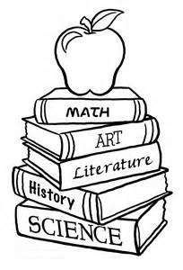

My Favourite Subject
I am a science student but unlike my other classmates, I have opted for Elective English. My friends and relatives tried to dissuade me saying-I will have to waste a lot of my precious time on English-a not very scoring subject. But English as it is not literary. Reading in itself is a great pleasure. English has a wealth of literature, unsurpassed by any other language, the descriptions and the complexities of the nuances. Studying Shaw and Hardy gives us an insight in human nature. We realize what actions bring what reactions. How a man would react to a given set of circumstances or action. We learn to look for and understand deeper meanings. My love for my subject has inculcated in me the habit of reading. As a philosopher pointed out, “Reading ennobles man, makes one more tolerant to the follies of others and bridges the gap between the countries and cultures” I hope that it will do so for me too.